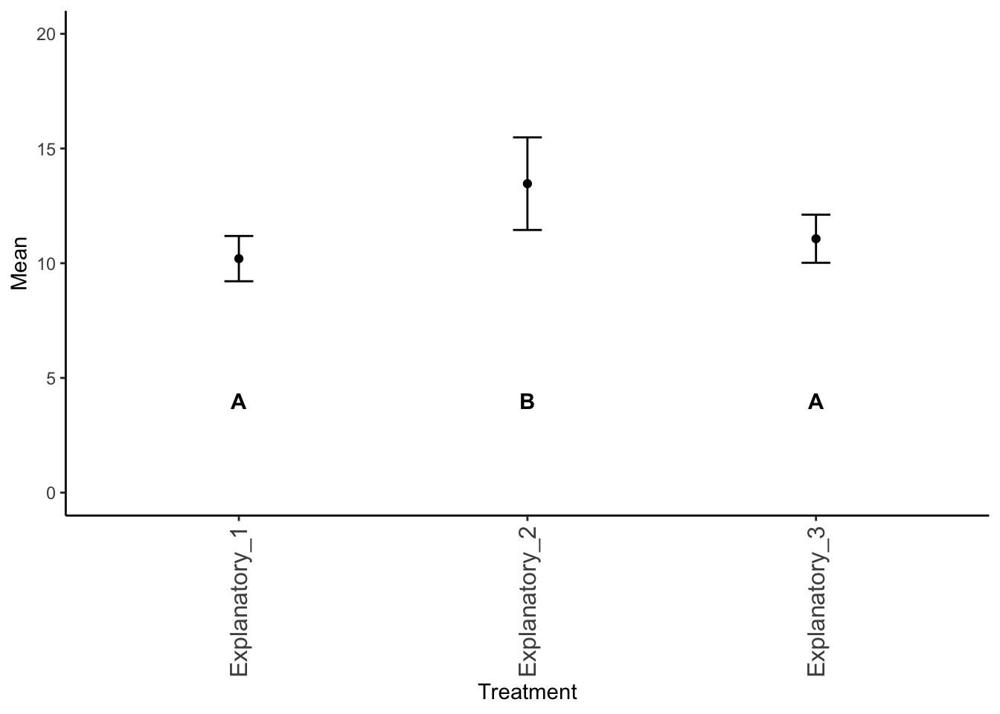
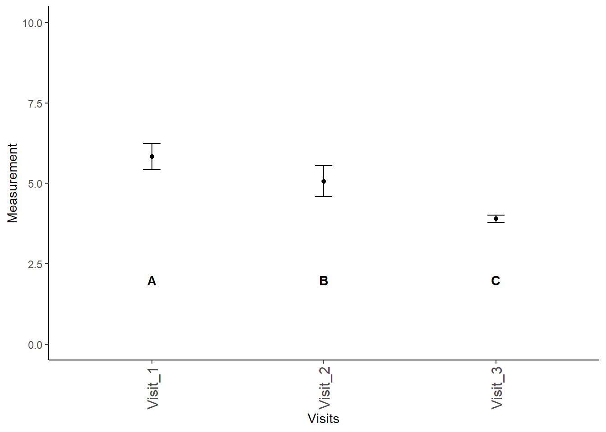

Previously, we discussed one-way ANOVAs, where we are looking at a single factor split across three or more groups and trying to determine if the means of these groups are equal (i.e., \(H_0: \mu_1=\mu_2=...\mu_i\)). ANOVA specifically allows us to analyze the variance of these different groups to ascertain which factors are most responsible for the variation we observe in the data. Because of the way ANOVA operates, we can actually test multiple different combinations of variables simultaneously in what we call a two-way ANOVA.
Don’t forget to load your required packages - some we have used before, like agricolae, plyr, and tidyverse, but others are new for this section: multcomp and nlme! As a reminder, these packages are designed for the following:
agricolae: originally written as a Master’s thesis at the Universidad Nacional de Ingeniería (Lima, Perú), this package is designed to help with agricultural research.
plyr: tools for common problems, including splitting data, applying functions across data, and combining datasets together.
tidyverse: one we are already familiar with; a wrapper for installing ggplot2, dplyr, tidyr, readr, purrr, tibble, stringr, and forcats.
multcomp: more in depth and better MULTiple COMParisons via linear models and related models.
nlme: a package for fitting Gaussian and non-linear mixed-effect models.
PMCMRplus: a math package with post-hoc tests for Friedman’s test
library(agricolae)library(plyr)library(tidyverse)# NEW PACKAGES NEEDED# Don't forget to install these on your machinelibrary(multcomp)
Warning: package 'multcomp' was built under R version 4.5.1
Warning: package 'MASS' was built under R version 4.5.1
library(nlme)library(PMCMRplus)
13.2 Designs
There are several different designs for two-way ANOVAs, and we will cover some of the most common designed here.
For these examples, we are going to randomly generated examples. I will refer to the variables as Response and Explanatory for simplicity’s sake.
13.2.1 Randomized block design
Randomized block designs look at combinations of variables that could be affecting the results. More specifically, we are looking at two strata or factors and their effects on a continuous response variable.
set.seed(8675309)# random example# Blocking variableBlocking_Variable <-c("Group 1", "Group 2", "Group 3")# explanatory variables# these are your columns# these are your primary hypothesisExplanatory_1 <-c(10.1, 9.4, 11.1)Explanatory_2 <-c(12, 13.0, 15.4)Explanatory_3 <-c(11.2, 10.1, 11.9)# create "data table" as we normally see it# combine all columnsdata_expanded <-cbind(Blocking_Variable, Explanatory_1, Explanatory_2, Explanatory_3) |>as.data.frame() # create data framedata_expanded
Blocking_Variable Explanatory_1 Explanatory_2 Explanatory_3
1 Group 1 10.1 12 11.2
2 Group 2 9.4 13 10.1
3 Group 3 11.1 15.4 11.9
Note that this table is in the format that we most often see, but we need to reshape these data to make it easier for us to perform our analyses. I created the data here as a matrix with named columns and rows; the following code may need to be adjusted if you do things differently.
# expand to "long" format# if not done earlier, convert to data framedata <- data_expanded |># !by column for aggregating# names_to = what to name column aggregation# values_to = what the measurements should be calledpivot_longer(!Blocking_Variable, names_to ="Explanatory_Variables", values_to ="Measurements")data
# A tibble: 9 × 3
Blocking_Variable Explanatory_Variables Measurements
<chr> <chr> <chr>
1 Group 1 Explanatory_1 10.1
2 Group 1 Explanatory_2 12
3 Group 1 Explanatory_3 11.2
4 Group 2 Explanatory_1 9.4
5 Group 2 Explanatory_2 13
6 Group 2 Explanatory_3 10.1
7 Group 3 Explanatory_1 11.1
8 Group 3 Explanatory_2 15.4
9 Group 3 Explanatory_3 11.9
Now we can do our ANOVA. Note that I put factor around the blocking variable.
# mark block by factor# best to always usedata_aov <-aov(Measurements ~ Explanatory_Variables +factor(Blocking_Variable), data)summary(data_aov)
In this particular example, the blocking variable does not significantly differ, however the explanatory variable does differ.
Remember, the columns represent your primary hypothesis. You will only plot your results if your primary hypothesis is significant!
Given that our primary null hypothesis is rejected (that is to say, not all means are equal), we need to plot our results.
To determine which mean(s) differ, we will use a Tukey Test. Unfortunately, the agricolae function HSD.test does not work as well for these multi-directional ANOVAs, so we need to use TukeyHSD.
tukey_data_aov <-TukeyHSD(data_aov)tukey_data_aov
Tukey multiple comparisons of means
95% family-wise confidence level
Fit: aov(formula = Measurements ~ Explanatory_Variables + factor(Blocking_Variable), data = data)
$Explanatory_Variables
diff lwr upr p adj
Explanatory_2-Explanatory_1 3.2666667 1.019919 5.5134144 0.0144034
Explanatory_3-Explanatory_1 0.8666667 -1.380081 3.1134144 0.4333834
Explanatory_3-Explanatory_2 -2.4000000 -4.646748 -0.1532523 0.0406301
$`factor(Blocking_Variable)`
diff lwr upr p adj
Group 2-Group 1 -0.2666667 -2.5134144 1.980081 0.9082398
Group 3-Group 1 1.7000000 -0.5467477 3.946748 0.1118461
Group 3-Group 2 1.9666667 -0.2800810 4.213414 0.0745795
As we can see above, each pairwise comparison is given a \(p\) value for the level of difference. We need to manually label these groups based on these \(p\) values, with groups being considered different if \(p < 0.05\). We can do this as follows, but unfortunately, we need to do it by hand since we don’t have a short-form code (yet) for this conversion.
# change Explanatory_Variables to your dataTreatments <-unique(data$Explanatory_Variables)sig_labels <- Treatments |>as.data.frame() |>mutate(Significance =rep(NA, length(Treatments)))# Change Explanatory_Variables to your datacolnames(sig_labels) <-c("Explanatory_Variables", # MUST BE SAME AS DATA"Significance")tukey_data_aov$Explanatory_Variables
NOTE that I am going to have to adjust column names and variable names a few times. Based on the above, we can see that Explanatory_3 and Explanatory_1 are not different from each other, but everything else is in a different group relative to each other. We can label these by hand.
Explanatory_Variables Significance
1 Explanatory_1 A
2 Explanatory_2 B
3 Explanatory_3 A
As we can see above, now only Explanatory_2 is given a different letter category.
Now, we can plot these different factors.
# summarize by group# slight adjustment from previoussummary_data <-ddply(data, "Explanatory_Variables", summarise,N =length(as.numeric(Measurements)),mean =mean(as.numeric(Measurements)),sd =sd(as.numeric(Measurements)),se = sd /sqrt(N))summary_data
Explanatory_Variables N mean sd se
1 Explanatory_1 3 10.20000 0.8544004 0.4932883
2 Explanatory_2 3 13.46667 1.7473790 1.0088497
3 Explanatory_3 3 11.06667 0.9073772 0.5238745
# SET Y LIMITS# change based on observed dataylims <-c(0, 20)# set label height, can change before plotting functionlabel_height <-4ggplot(summary_data, # plot summary data# Define plotting - x by group, y is mean, grouping by groupaes(x = Explanatory_Variables, y = mean)) +# add points to plot for y valuesgeom_point() +# add error bars around pointsgeom_errorbar(data = summary_data, # define error barsaes(ymin = mean -2*se, ymax = mean+2*se), # width of barwidth =0.1) +# set vertical limits for plotylim(ylims) +# make it a classic theme - more legibletheme_classic() +# add text to plotgeom_text(data = sig_labels,# make boldfontface ="bold",# define where labels should goaes(x = Explanatory_Variables, # define height of labely =4, # what are the labels?label =paste0(Significance))) +xlab("Treatment") +ylab("Mean") +# remove legend - not needed heretheme(legend.position ="none",# make label text vertical, easier to readaxis.text.x =element_text(angle =90, # vertical offset of textvjust =0.5, # text sizesize =12))

13.2.2 Repeated measures
Now, we are going to do a repeated measures ANOVA, where we have the same individuals being measured multiple times. Consider the following imaginary dataset:
Error: factor(Individuals)
Df Sum Sq Mean Sq F value Pr(>F)
Residuals 2 0.4867 0.2433
Error: Within
Df Sum Sq Mean Sq F value Pr(>F)
factor(Visits) 2 5.687 2.8433 89.79 0.000475 ***
Residuals 4 0.127 0.0317
---
Signif. codes: 0 '***' 0.001 '**' 0.01 '*' 0.05 '.' 0.1 ' ' 1
Unfortunately, because of the model this is, we cannot perform a Tukey Test on the “object” that is created from this ANOVA analysis. We can, however, approach this from a different direction and get our Tukey results (thanks to Henrik on StackOverflow!). For this to work, we need to install the packages nlme and multcomp.
# ensure data is proper formatdata$Individuals <-as.factor(data$Individuals)data$Visits <-as.factor(data$Visits)data$Measurements <-as.numeric(data$Measurements)
The next part of the code fits a linear model to the data. A linear model, which we will cover later in the class, is mathematically very similar to an ANOVa. However, we can data from this model and extract the ANOVA data to understand more about the interactions. We need to use a linear model for this to account with the relationships between the two.
# fit a linear mixed-effects model# similar to ANOVAlme_data <-lme(Measurements ~ Visits, data = data, # define repeated sectionrandom =~1|Individuals)# perform ANOVA on modelanova(lme_data)
As we can see above, we can get the ANOVA results from this linear mixed-effects model fit to the dataset. Now, we need to know post-hoc which sets are different:
lme_data |># "general linear hypothesis"# define a comparison to make# can add corrections like test = adjusted (type = "bonferroni")glht(linfct =mcp(Visits ="Tukey")) |># return a summary of the abovesummary()
Simultaneous Tests for General Linear Hypotheses
Multiple Comparisons of Means: Tukey Contrasts
Fit: lme.formula(fixed = Measurements ~ Visits, data = data, random = ~1 |
Individuals)
Linear Hypotheses:
Estimate Std. Error z value Pr(>|z|)
Visit_2 - Visit_1 == 0 -0.7667 0.1453 -5.277 <1e-06 ***
Visit_3 - Visit_1 == 0 -1.9333 0.1453 -13.306 <1e-06 ***
Visit_3 - Visit_2 == 0 -1.1667 0.1453 -8.030 <1e-06 ***
---
Signif. codes: 0 '***' 0.001 '**' 0.01 '*' 0.05 '.' 0.1 ' ' 1
(Adjusted p values reported -- single-step method)
Let’s plot these. Note that we are not summarizing these the same way, since things are varying based on individual as well.
Note: For reasons I am not certain, you need to put the locations and then ggplot uses these colors to define everything. I really don’t know why this is happening, so if you have a solution, let me know.
ggplot(summary_data,aes(x = Visits, y = mean)) +geom_point() +geom_errorbar(data = summary_data, # define error barsaes(ymin = mean -2*se, ymax = mean+2*se), # width of barwidth =0.1) +# set vertical limits for plotylim(c(0,10)) +# make it a classic theme - more legibletheme_classic() +# add text to plotgeom_text(data = sig_levels_repeated,# make boldfontface ="bold",# define where labels should goaes(x = Visits, # define height of labely =2, # what are the labels?label =paste0(Significance))) +xlab("Visits") +ylab("Measurement") +# remove legend - not needed heretheme(legend.position ="none",# make label text vertical, easier to readaxis.text.x =element_text(angle =90, # vertical offset of textvjust =0.5, # text sizesize =12))

13.2.3 Factorial ANOVA
Mathematically, a factorial ANOVA is the same as a randomized block ANOVA; please see that section for information on how to run this test.
13.2.4 ANOVA with interaction
Sometimes when we running a model, we want to look for interactive effects. Interactive effects are situations where one (or both) variables on their own do not effect the data, but there is a cumulative effect between variables that effects things. Let’s look at an example, based on our initial example but with the data altered.
set.seed(8675309)# we are using data from the randomized black ANOVA againdata_expanded
Blocking_Variable Explanatory_1 Explanatory_2 Explanatory_3
1 Group 1 10.1 12 11.2
2 Group 2 9.4 13 10.1
3 Group 3 11.1 15.4 11.9
### YOU DO NOT NEED TO DO THIS### CREATING DATA FOR EXAMPLEdata_expanded$Explanatory_1 <-as.numeric(data_expanded$Explanatory_1)data_expanded$Explanatory_2 <-as.numeric(data_expanded$Explanatory_2)data_expanded$Explanatory_3 <-as.numeric(data_expanded$Explanatory_3)# create some pseudorandom data# [,-1] excludes first column - group datadata_expanded2 <-cbind(Blocking_Variable, data_expanded[,-1] -0.75)data_expanded3 <-cbind(Blocking_Variable, data_expanded[,-1]*1.05)data_expanded <-rbind(data_expanded, data_expanded2, data_expanded3)# expand to "long" formatdata <- data_expanded |># convert to data frameas.data.frame() |># !by column for aggregating# names_to = what to name column aggregation# values_to = what the measurements should be calledpivot_longer(!Blocking_Variable, names_to ="Treatments", values_to ="Measurements")# specifying factor to be safeinteractive_aov <-aov(Measurements ~factor(Treatments) +factor(Blocking_Variable) +factor(Treatments)*factor(Blocking_Variable), data)summary(interactive_aov)
As we can see above, we have very significant effects for Treatment and Blocking_Variable, but a less significant effect for the interaction between the two. Remember - we only need to plot our primary hypothesis. Note however, that Tukey gives us our differences and \(p\) values for each set of tests and comparisons:
I do not plot this here, but it would be similar to the other parts of this test.
13.3 Friedman’s test
13.3.1 Using R
Friedman’s test is a non-parametric alternative to a two-way ANOVA, so as you would guess, it can be painful to implement. We will use an altered version of the same test we’ve used before:
# set seed - make reproducibleset.seed(8675309)### DO NOT NEED TO REPEAT THIS### CREATING DATA FOR EXAMPLE # new set of foods - this time, ten of themTreatments <-c(paste("Treatment",1:10)) |>as.factor()# pre-created data frame of locations from earlierBlocking_Factor <-c(paste("Block", 1:10)) |>as.factor()long_data <-crossing(Blocking_Factor, Treatments)long_data$Measurements <-NAfor(i in1:length(unique(long_data$Treatments))){ subset_rows <-which(long_data$Treatments==long_data$Treatments[i]) long_data$Measurements[subset_rows] <-runif(n =length(subset_rows),min = i-2, max = i+2) |>round(1)}long_data
Now that we have our expanded and randomized table, we can get started with our test.
Our calculation for the Friedman’s test statistic \(Q\) (not to be confused with Tukey’s \(q\)!) is: \[Q = \frac{12}{nk(k+1)} \cdot \Sigma R_j^2 - 3n(k+1)\]
where \(n\) is the total number of individuals in each sample in the dataset, \(k\) is the number of groups, and \(R_j^2\) is the sum of the ranks.
As we can see, some pairs are inseparable and others are separable. We can now plot as for the other problems.
13.4 Homework: Two-way ANOVA
This homework requires you to install tidytuesdayR.
For each question:
State your null and alternative hypotheses
Justify what type of ANOVA you think this is and why.
Test for normality relative to the primary hypothesis
Perform the appropriate ANOVA
Interpret the results and provide a conclusion
If there are any additional questions, be sure to address them
13.4.1 Question 1: Stat-y Spice
You and your friends are jamming out to the Spice Girls, like you do every Tuesday night, when you get into a heated debate about which of their songs are the most danceable. Amidst all the bickering, you make out that some of your friends are fixated on the year the song came out, while others are arguing that they have more success making “bangers” in major keys than they do in minor keys. In order to save your friend group from infighting, you decide to perform a two-way ANOVA on release year and whether the song is in a major or a minor key and how those factors affect danceability.
You and your study group are binge-watching the TV show Alone while studying for your history final (it is on the History channel, so it has to help somehow, right?). One of your buddies says that the show is inherently unfair, because men are better at survival techniques than women are. This rubs you the wrong way, so you want to see if there is any merit to his claims. You decide to analyze the number of days people are able to last in the show, divided by gender. You also realize that there are cultural differences between countries, so you want to account for any error due to cultural background when you perform your test.
Talking to Dr. Cooper after class about niche ecology, you become fascinated by the idea of similar species having morphological differences to allow them to co-occur in different areas. You decide to see if there are any morphological differences between penguin species on Antarctic islands. You decide to examine populations of thee congeneric penguins that are regionally sympatric: Adelie Penguin Pygoscelis adeliae, Chinstrap Penguin P. antarcticus, and Gentoo Penguin P. [papua] ellsworthi. You anticipate that there will be differences in bill length among species, but you also know that there is intraspecific competition within species because you did not fall asleep in your evolution class and know that this may also have an effect on bill lengths. In your conclusion, be sure to state which groups are (or are not) different.
Mosquitoes kill more people than any other animal every year. One of the ways in which humans die from mosquitoes is by infecting them with malaria. While malaria has been largely eradicated in North America, it still persists in the Caribbean, Central America, and South America.
Load the malaria dataset below, and:
Filter for the entity of Andean Latin America, Caribbean, Central Latin America, Southern Latin America, and Tropical Latin America.
Filter only for years that are 2012 or more recently.
Compare malaria deaths by country, taking into account that year may also be a source of variation for deaths (i.e., via outbreaks).
These data are non-normal, but for the purposes of this problem, perform a standard ANOVA on the non-transformed data.
It is well known that male driver insurance costs more than female’s. But did you know those who live in urban areas also pay more? You want to see if this translates to incarceration rates as well, to truly be able to tell if males are “Bad Guys”.
Load the pretrial dataset below, and:
Filter for the male and female populations to exclude total incarceration rates
Compare incarceration rates between male and female populations, and determine if urbanicity plays a role in incarceration rates between these two populations.
These data are non-normal, but for the purposes of this problem, perform a standard ANOVA on the non-transformed data. Provide a potential explanation as to why this data is not normal.